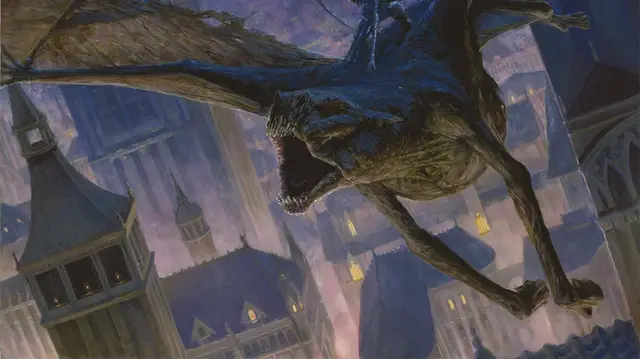

Сумракокрыл
Gloamwing
Большая Нежить, нейтрально-злая

Класс Доспеха 16 (природный доспех)
Хиты 136 (16к10 + 48)
Скорость 30 футов, летая 60 футов
| мод | спас | ||
|---|---|---|---|
| СИЛ | 20 | +5 | +8 |
| ЛОВ | 16 | +3 | +6 |
| ТЕЛ | 17 | +3 | +3 |
| мод | спас | ||
|---|---|---|---|
| ИНТ | 2 | −4 | −4 |
| МДР | 11 | +0 | +0 |
| ХАР | 6 | −2 | −2 |
Навыки Восприятие +3, Скрытность +6
Сопротивление урону некротическая энергия; дробящий, колющий, рубящий от немагических атак
Иммунитет к урону яд
Иммунитет к состояниям испуг, истощение, отравление, очарование
Чувства тёмное зрение 120 футов, пассивное Восприятие 13
Языки понимает Общий
Опасность 8 (3900 опыта)
Бонус мастерства +3
Особенности
Связь смерти. Если хиты спектрального наездника опускаются до 0, сумракокрыл так же погибает.
Облёт. Сумракокрыл не провоцирует атаку, когда вылетает за пределы досягаемости врага.
Чувствительность к солнечному свету. Находясь на солнечном свету, сумракокрыл совершает с помехой броски атаки, а также проверки Мудрости (Восприятие), основанные на зрении.
Действия
Мультиатака. Сумракокрыл совершает две атаки: одну Укусом и одну Когтями.
Укус. . Рукопашная атака оружием: +8 к попаданию, досягаемость 5 фт., одна цель. Попадание: 18 (3к8 + 5) колющего урона.
Когти. . Рукопашная атака оружием: +8 к попаданию, досягаемость 5 фт., одна цель. Попадание: 15 (3к6 + 5) рубящего урона.
Описание
Голова сумракокрыл почти крысиная, с выступающими зубами, а кожистая кожа туго натянута на череп, а его глаза представляют собой пустые глазницы. Его тело покрыто костяными пластинами, а из плеч тянутся огромные кожистые крылья.